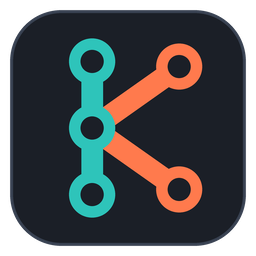
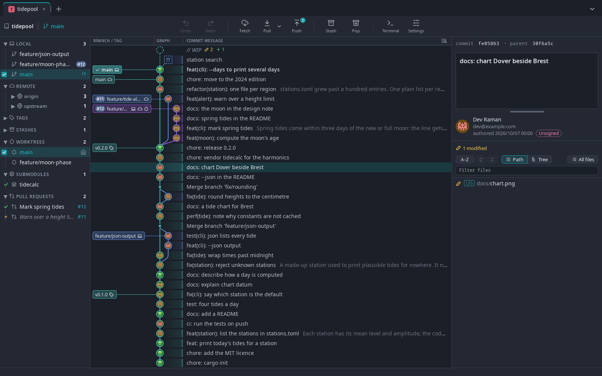
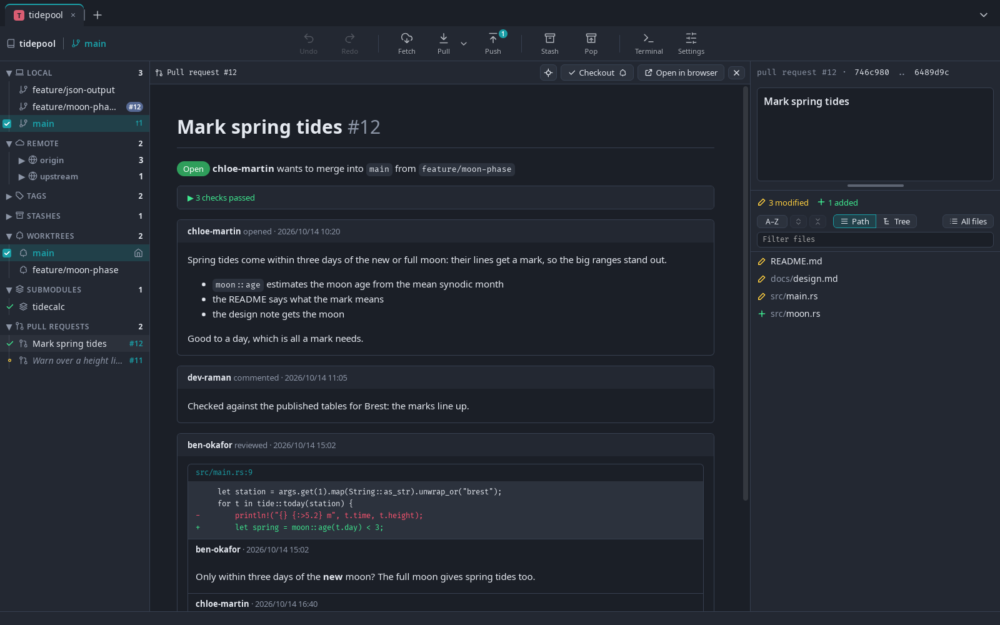
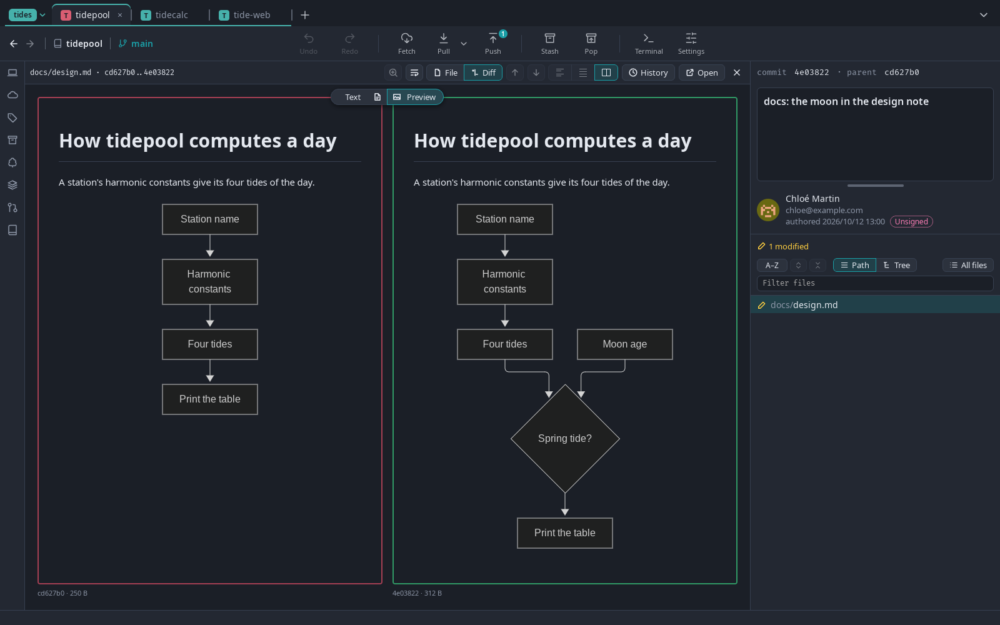
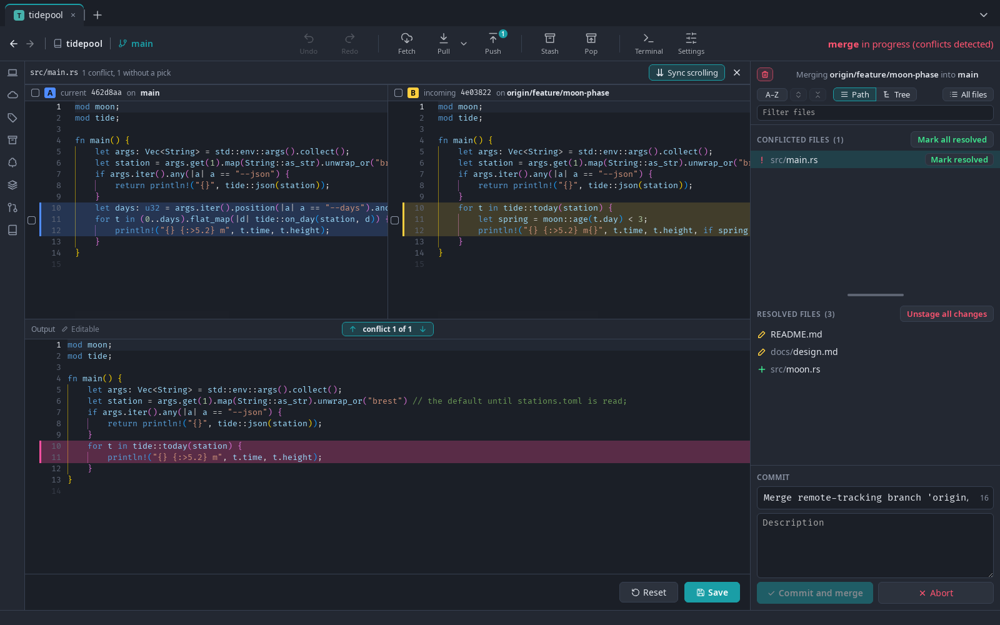
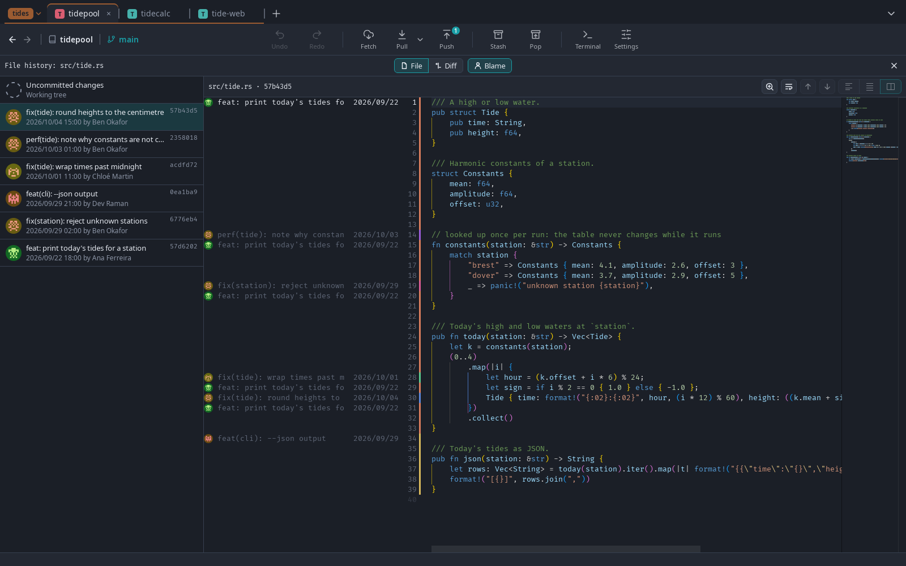

Git KrillA lean desktop git client for Linux, Windows and macOS: a clean interface, power features included, from interactive rebase to pull requests.
Free and open source. It runs the git you already have, so your config, hooks, keys and credentials apply as usual.
What it does
- Git WorkflowExplore the commit graph, manage branches, stashes and rebases in a click. Stage down to a single line.
- DiffsInspect changes by hunk, inline or side by side, or the whole file alone, and edit uncommitted ones in place.
- TabsWork across multiple repositories in dedicated tabs, each paired with a built-in terminal.
- ConflictsResolve tricky merges in a three-pane editor, picking changes by the hunk or down to the individual line.
- HistoryStep through past revisions of a file with inline blame so you know who changed what and why.
- RebaseClean up commit history visually by reordering, rewording, squashing or dropping commits, individually or in bulk.
- Pull requestsPowered by the GitHub CLI: check CI statuses, read review threads or open new PRs without leaving the app.
- PreviewsRender Markdown, HTML and SVG. View PDFs, inspect images and binaries or open any file in its default app.
- Advanced GitManage worktrees, submodules and LFS files right from the interface.
A closer look





Install
- Linux:
sudo apt install ./git-krill_0.4.1_linux.deb, then rungit-krill. - Windows: run the installer. It is not signed yet: SmartScreen asks first, “More info” then “Run anyway”. Needs Git for Windows.
- macOS: open the .dmg and drag Git Krill to Applications. It is not notarized: the first launch is refused, then System Settings › Privacy & Security › “Open Anyway”. Needs git:
xcode-select --install, or Homebrew's.